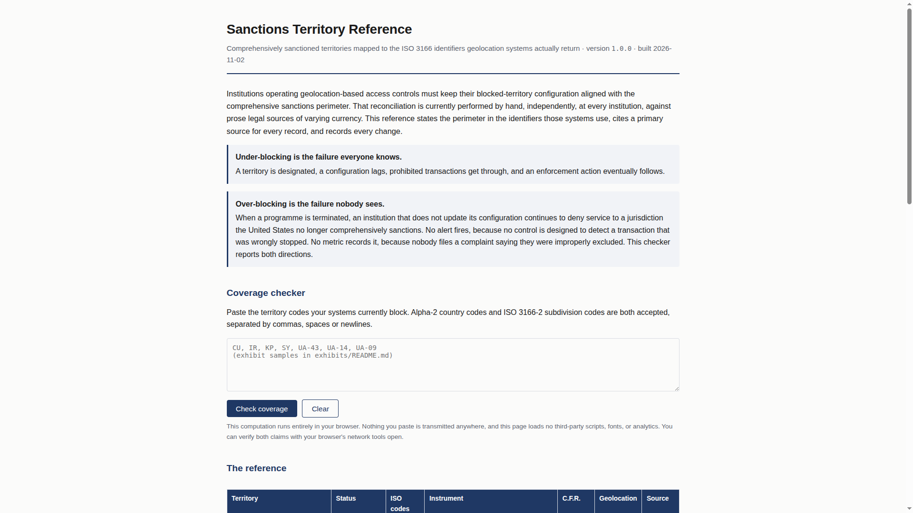
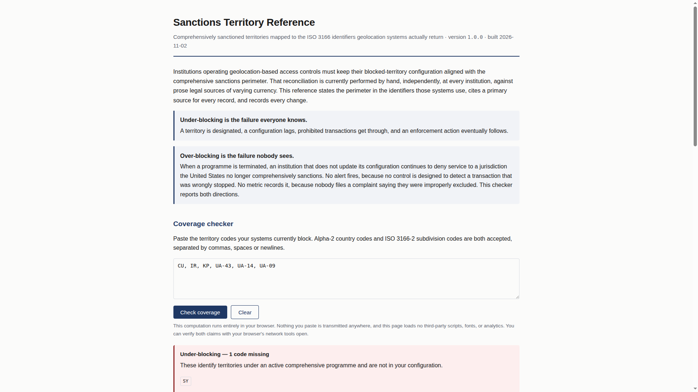
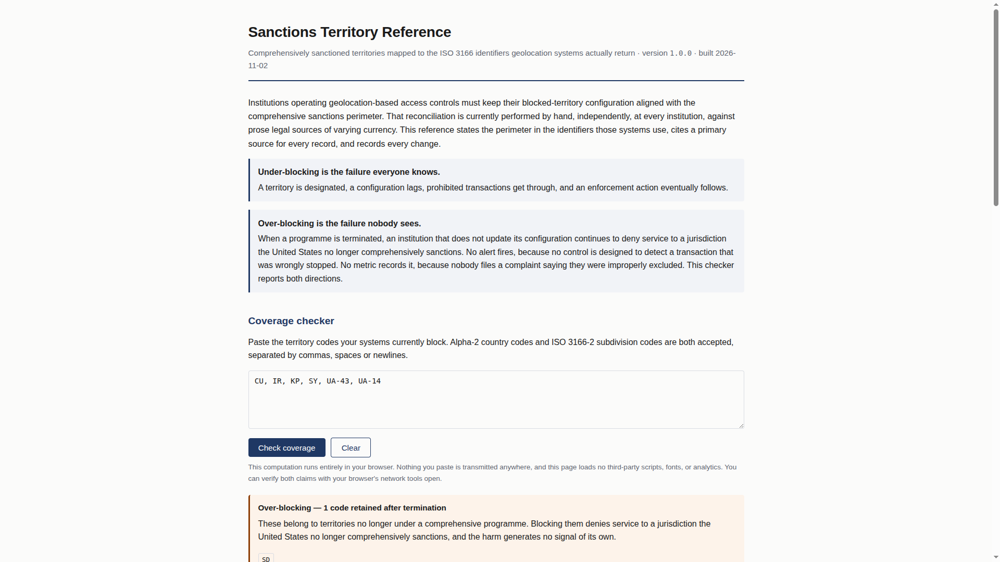
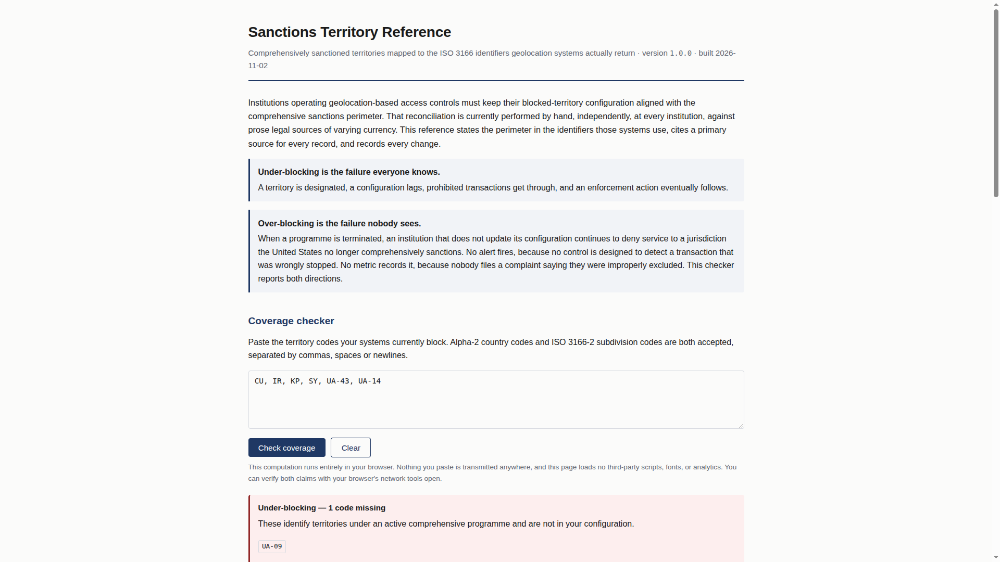

Project: Sanctions Territory Reference
Preparer: Divine Linus
Repository: https://github.com/Divine16/sanctions-territory-reference
Zenodo (dataset v0.1.0): https://zenodo.org/records/23677148 · DOI 10.5281/zenodo.23677148
Prepared: 2026-11-02 (UTC)
Artifact folder: exhibits/artifacts/ (regenerate with python3 scripts/generate_exhibit_artifacts.py)
| ID | Requirement | Status | Location in this package |
|---|---|---|---|
| G.5.1 | Landing page PDF with live URL and date | Pending | § G.5.1 — print from Pages once live; interim screenshot artifacts/G5-01-landing.png |
| G.5.2 | Screenshot — under-blocking | Done | § G.5.2 · artifacts/G5-02-under-blocking.png |
| G.5.3 | Screenshot — over-blocking | Done | § G.5.3 · artifacts/G5-03-over-blocking.png |
| G.5.4 | Screenshot — partial coverage (multi-code territory) | Done | § G.5.4 · artifacts/G5-04-partial-coverage.png |
| G.5.5 | Network tab — zero requests (privacy) | Pending | § G.5.5 — you capture in browser (DevTools) |
| G.6.1 | Data file — every record with citation | Done | § G.6.1 · artifacts/G6-records-with-citations.md + data/territories.json |
| G.6.2 | CHANGELOG.md | Done | § G.6.2 |
| G.6.3 | Staleness workflow YAML + run record | Partial | § G.6.3 · YAML included; run record from GitHub Actions |
| G.6.4 | validate.py — two enforced rules |
Done | § G.6.4 |
| G.6.5 | CI failing on deliberately broken record | Pending | § G.6.5 · exhibits/G.6-ci-failure-demo.md |
| G.7.1 | Feed URL | Done | § G.7.1 |
| G.7.2 | Retrieved JSON + retrieval timestamp | Partial | § G.7.2 · local build copy until Pages returns 200 |
| G.7.3 | Build script — feed from single data file | Done | § G.7.3 |
| G.7.4 | Wayback capture | Pending | § G.7.4 — after feed URL is live |
Intended live site: https://divine16.github.io/sanctions-territory-reference/
(Enable GitHub Pages: branch main, folder /docs. As of package preparation the feed URL returned 404 until Pages is enabled.)
Action: Open the live site → Print → Save as PDF with browser headers/footers enabled so the PDF shows URL and date.
Interim evidence (local preview, 2026-11-02 build):

Input pasted (missing active code SY):
CU, IR, KP, UA-43, UA-14, UA-09

Input pasted (terminated SD still blocked):
CU, IR, KP, SY, UA-43, UA-14, UA-09, SD

Input pasted (territory with UA-14 and UA-09 — only one present):
CU, IR, KP, SY, UA-43, UA-14

Action (required for final submission):
index.html document load).Claim on page: “This computation runs entirely in your browser… this page loads no third-party scripts…” — the network screenshot is the demonstration.
Attach: artifacts/G5-05-network-zero-requests.png (add after capture)
Source of truth: data/territories.json. Summary table (generated):
See file: artifacts/G6-records-with-citations.md
| ID | Official name | Status | ISO codes | Primary source | last_verified | verified_by |
|---|---|---|---|---|---|---|
| cuba-comprehensive | Cuba | active | CU | https://www.ecfr.gov/current/title-31/subtitle-B/chapter-V/part-515 | 2026-10-26 | Divine Linus |
| iran-comprehensive | Iran | active | IR | https://www.ecfr.gov/current/title-31/subtitle-B/chapter-V/part-560 | 2026-10-26 | Divine Linus |
| north-korea-comprehensive | North Korea | active | KP | https://www.ecfr.gov/current/title-31/subtitle-B/chapter-V/part-510 | 2026-10-26 | Divine Linus |
| syria-comprehensive | Syria | active | SY | https://www.ecfr.gov/current/title-31/subtitle-B/chapter-V/part-542 | 2026-10-26 | Divine Linus |
| ukraine-crimea-region | Crimea region of Ukraine | active | UA-43 | https://www.federalregister.gov/documents/2014/12/24/2014-30194/ukraine-related-sanctions-regulations | 2026-10-26 | Divine Linus |
| ukraine-donetsk-luhansk-regions | Donetsk/Luhansk regions | active | UA-14, UA-09 | https://www.federalregister.gov/documents/2022/02/28/2022-04254/ukraine-related-sanctions-regulations | 2026-10-26 | Divine Linus |
| sudan-comprehensive-terminated | Sudan | terminated | SD | https://www.federalregister.gov/documents/2020/10/16/2020-22935/sudanese-sanctions-regulations | 2026-10-26 | Divine Linus |
# Change log
Append-only. Every modification to `data/territories.json` is recorded here with
the instrument that caused it. Entries are never edited or removed — a correction
is a new entry stating what was wrong and what it now says.
Format: `YYYY-MM-DD — territory — change — causing instrument — who`
---
## 2026-10-26
- 2026-10-26 — Cuba — initial active comprehensive record — Cuban Assets Control Regulations (31 C.F.R. Part 515) — Divine Linus
- 2026-10-26 — Iran — initial active comprehensive record — Iranian Transactions and Sanctions Regulations (31 C.F.R. Part 560) — Divine Linus
- 2026-10-26 — North Korea — initial active comprehensive record — North Korea Sanctions Regulations (31 C.F.R. Part 510) — Divine Linus
- 2026-10-26 — Syria — initial active comprehensive record — Syrian Sanctions Regulations (31 C.F.R. Part 542) — Divine Linus
- 2026-10-26 — Crimea region of Ukraine — initial active regional record — Executive Order 13685 (2014) — Divine Linus
- 2026-10-26 — Donetsk/Luhansk regions of Ukraine — initial active regional record with scope/ISO mismatch note — Executive Order 14065 (2022) — Divine Linus
- 2026-10-26 — Sudan — initial terminated comprehensive record (programme lifted) — Executive Order 13942 (2020); 31 C.F.R. Part 538 wind-down — Divine Linus
(Canonical copy: CHANGELOG.md / artifacts/G6-CHANGELOG.md.)
Workflow file: .github/workflows/staleness.yml
name: Verification staleness
on:
schedule:
- cron: "0 14 * * 1"
workflow_dispatch:
permissions:
contents: read
issues: write
jobs:
check:
runs-on: ubuntu-latest
steps:
- uses: actions/checkout@v4
- name: Report records older than 90 days
id: stale
run: |
set +e
python3 scripts/validate.py --staleness 90 2>&1 | tee staleness.log
code=$?
echo "exit_code=$code" >> "$GITHUB_OUTPUT"
exit 0
- name: Open issue when stale
if: steps.stale.outputs.exit_code != '0'
uses: actions/github-script@v7
with:
script: |
# … opens GitHub issue with staleness.log when threshold exceeded
Run record (attach):
All records verified within 90 days. (success) or issue body (failure path).artifacts/G6-staleness-run-screenshot.png or export log to artifacts/G6-staleness-run.log.validate.py)No record ships without a citation; no record ships unverified.
# ---- the integrity rules that matter
src = r.get("primary_source")
if not isinstance(src, str) or not src.strip():
p.add(where, "primary_source is required — no record ships without a citation")
elif PLACEHOLDER.search(src):
p.add(where, "primary_source is still a placeholder")
if r.get("verified") is not True:
p.add(where, "verified is not true — a human must check this record against "
"the primary source before it can ship")
Full excerpt: artifacts/G6-validate-enforced-rules.py.txt · source: scripts/validate.py.
CI on every push: .github/workflows/ci.yml runs make validate, make build, and fails if docs/ drift.
Follow G.6-ci-failure-demo.md: branch with "verified": false → failed CI job Validate data → screenshot.
Attach: artifacts/G6-ci-failure-screenshot.png
https://divine16.github.io/sanctions-territory-reference/feed.json
Stable path in repository after build: docs/feed.json.
Metadata (artifacts/G7-feed-retrieval-metadata.json):
{
"retrieved_at_utc": "2026-11-02T19:29:55.444942+00:00",
"feed_url": "https://divine16.github.io/sanctions-territory-reference/feed.json",
"retrieval_method": "local_build_copy",
"note": "Replace with live curl capture once GitHub Pages returns 200.",
"live_url_error": "HTTP Error 404: Not Found",
"source_path": "docs/feed.json"
}
Payload: artifacts/G7-feed-retrieved-2026-11-02T192955Z.json
After Pages is live, refresh:
python3 scripts/generate_exhibit_artifacts.py
curl -sS -D exhibits/artifacts/G7-feed-http-headers.txt \
-o exhibits/artifacts/G7-feed-retrieved-live.json \
'https://divine16.github.io/sanctions-territory-reference/feed.json'
date -u +'%Y-%m-%dT%H:%M:%SZ' > exhibits/artifacts/G7-feed-retrieved-live.timestamp.txt
From scripts/build.py (only data/territories.json is read for feed records):
# ---- the feed: the same records, nothing added, nothing hidden
feed = {
"name": "Sanctions Territory Reference",
"version": version,
"generated": built,
"source_file": "data/territories.json",
"record_count": len(territories),
"active_count": sum(1 for t in territories if t["status"] == "active"),
"notice": ("Comprehensive territorial sanctions programmes only. ..."),
"territories": territories,
}
OUT.mkdir(parents=True, exist_ok=True)
(OUT / "feed.json").write_text(
json.dumps(feed, indent=2, ensure_ascii=False) + "\n", encoding="utf-8")
Full excerpt: artifacts/G7-build-feed-generation.py.txt.
After the feed URL returns 200:
https://divine16.github.io/sanctions-territory-reference/feed.json artifacts/G7-wayback-feed-screenshot.png and note the web.archive.org URL here:Wayback URL: _______________________________________________
Captured on: ______________________________________________
From repo root (no pandoc required):
pip install markdown # once
make exhibit-pdf # runs make exhibits, then writes PDF via Chrome headless
Output: exhibits/EXHIBIT-PACKAGE-G5-G7.pdf (and EXHIBIT-PACKAGE-G5-G7.html).
Alternative: open exhibits/EXHIBIT-PACKAGE-G5-G7.html in Chrome → Print → Save as PDF (enable background graphics).
Optional: sudo apt install pandoc then pandoc exhibits/EXHIBIT-PACKAGE-G5-G7.md -o exhibits/EXHIBIT-PACKAGE-G5-G7.pdf --resource-path=exhibits
Final bundle to submit: this PDF + artifacts/ folder (or zip exhibits/).